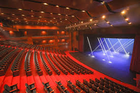
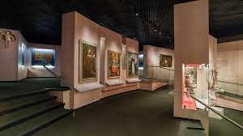

Festival de teatro reúne a compañías regionales y fortalece la agenda cultural de la capital
Categoría: Artes escénicas
La programación considera montajes con enfoque social, territorial y comunitario, promoviendo el acceso a expresiones artísticas diversas y el encuentro entre elencos de distintas regiones.
Leer más
Museos amplían actividades educativas para acercar el patrimonio a escolares y familias
Nuevas iniciativas buscan fomentar participación, aprendizaje y vínculo con espacios culturales.
Leer más
La literatura chilena gana visibilidad en ferias, editoriales independientes y espacios digitales
Escritores y mediadores culturales destacan el crecimiento de nuevas audiencias lectoras.
Leer más
Centros culturales refuerzan programación comunitaria con talleres y actividades abiertas
La agenda local busca ampliar la participación de vecinos, jóvenes y agrupaciones artísticas.
Leer másMás noticias de cultura

Comunidades impulsan proyectos para rescatar patrimonio e identidad local
Distintas iniciativas buscan poner en valor espacios, memorias y expresiones tradicionales.
Leer más
Exposiciones de artes visuales amplían su presencia en salas y espacios públicos
Curadores y artistas valoran nuevas instancias de exhibición y acceso ciudadano al arte.
Leer más
La música chilena fortalece circulación de artistas en escenarios y plataformas digitales
Nuevas propuestas independientes encuentran espacios para llegar a públicos más amplios.
Leer más
La agenda cultural regional gana protagonismo con ferias, muestras y encuentros ciudadanos
Regiones fortalecen su programación con actividades abiertas y enfoque territorial.
Leer másMirada cultural

La educación patrimonial se consolida como herramienta de formación y pertenencia
Docentes y mediadores destacan su valor para fortalecer identidad, memoria y participación.
Leer más
Ferias y encuentros culturales fortalecen el vínculo entre ciudadanía y creación artística
Organizaciones valoran estos espacios como instancias de acceso, formación y expresión comunitaria.
Leer más